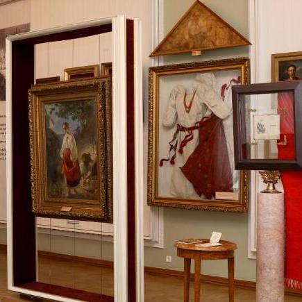
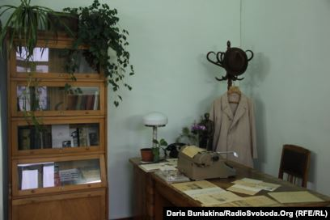
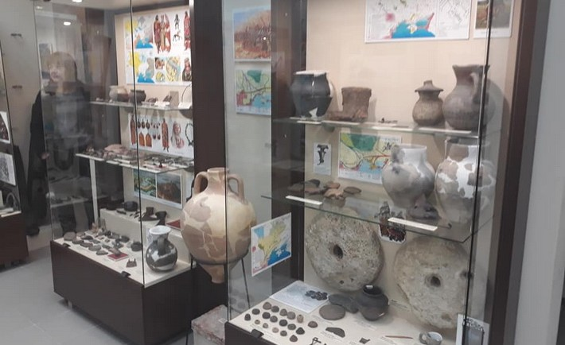
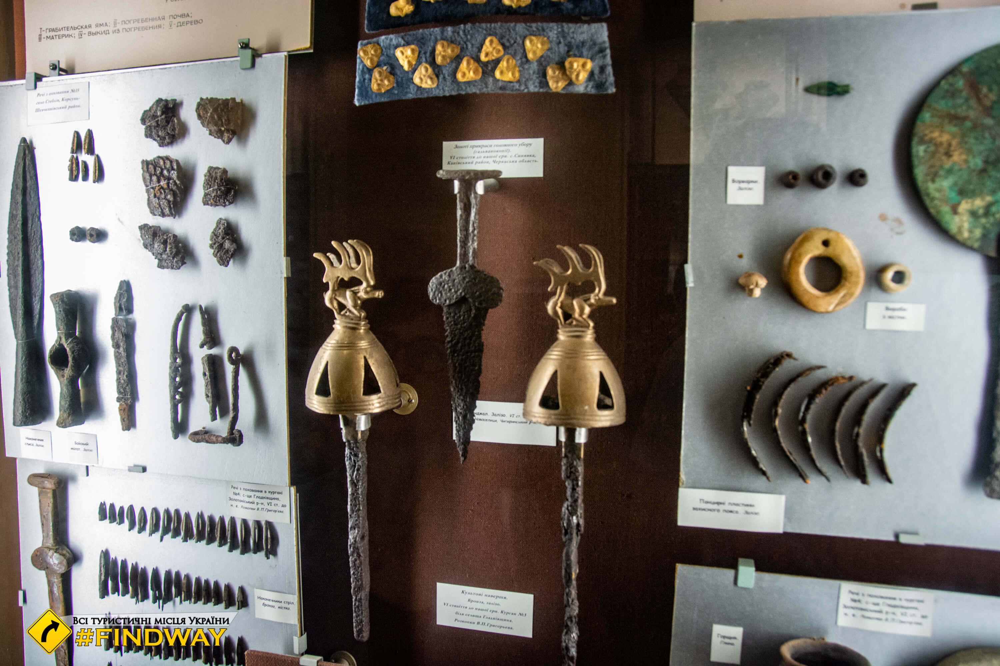
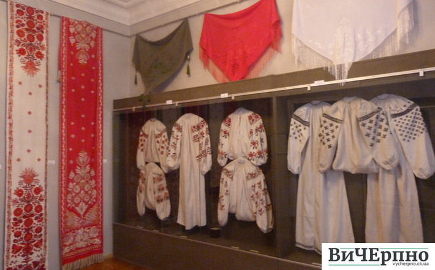
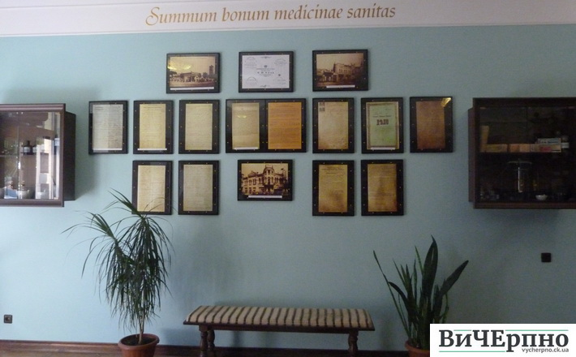

Музей «Кобзаря» Т. Г. Шевченка — музей у Черкасах присвячений збірці «Кобзар» Тараса Шевченка. Знаходиться в будинку братів Цибульських і містить чимало раритетних видань цієї книги. Його часто називають єдиним у світі музеєм однієї книги
Музей розташований у меморіальному будинку (особняк Цибульських), у якому від 18 до 22 липня 1859 року проживав сам Тарас Шевченко, про що свідчить меморіальна дошка на будинку музею.
Створення унікального музею було інційовано 1988 року, і вже за рік, у травні 1989 року, Музей «Кобзаря» Т. Г. Шевченка був відкритий у Будинку Цибульських
У світі збереглося лише декілька примірників першого «Кобзаря» (1840), тому один з них є гордістю черкаського музею.У музеї експонується ще одне прижиттєве видання поета — «Кобзар» 1860 року, що був надрукований коштом цукрозаводчика і мецената Платона Симиренка (з ним Тарас Шевченко познайомився під час своєї останньої подорожі по Україні 1859 року, зокрема перебуваючи у вотчині останнього Млієві). Симиренко виділив для видання «Кобзаря» 1100 карбованців, відтак це видання вийшло значно повнішим за попередні (17 творів і портрет Шевченка).
Черкаський літературно-меморіальний музей Василя́ Симоне́нка — музейна кімната «Робочий кабінет Василя Симоненка», присвячена життю і творчості українського поета Василя Андрійовича Симоненка, в приміщенні редакції газети «Черкаський край», де він працював, у місті Черкасах.
У приміщенні редакції колишньої газети «Черкаська правда» (нині «Черкаський край») від липня 1957 року по березень 1960 року працював Василь Симоненко. Музейну кімнату було відкрито 8 січня 1998 року до дня народження поета за рішенням Черкаської обласної державної адміністрації від 24 лютого 1997 року.
Експозиція розмістилась са́ме в колишньому кабінеті Василя Симоненка і розповідає про життєвий шлях та творчість поета і журналіста. Тут, зокрема, представлені фотографії, документи, листи, які він одержував і писав дописувачам, працюючи у відділі листів. Експонуються також особисті речі поета, рукописи його творів, записник з робочими нотатками, заява про вступ до спілки письменників України, та фотографії, зроблені І. Ф. Осадчим, колегою-фотографом. В окремих вітринах виставлені твори В. Симоненка як мовою оригіналів, так і переклади. Тут також зібрані спогади про поета, його друзів та однодумців.
Історія створення археологічного музею у Черкасах тісно пов'язана із життям відомого українського археолога Михайла Сиволапа. Все своє доросле життя він присвятив археології Черкаської області, багато років керував археологічними експедиціями на Черкащині, а будучи викладачем університету, вів археологічну практику студентів. Майже 28 років Михайло Павлович займався збиранням експонатів для археологічного музею. Ідея створення у Черкасах спеціалізованого археологічного музею виникла у нього ще наприкінці 1980-х. Починаючи з того часу і після, коли Україна вже здобула незалежність, він «оббивав пороги» усіх міських голів з пропозицією про створення такого музею. У кінці 1990-их років, ставши безробітним, більшість експонатів він передав до Черкаського обласного краєзнавчого музею, на основі решти з них у 2000 році було сформовано археологічний музей (нині кабінет археології) Черкаського національного університету[2], де він працював викладачем
Г2013 року міський голова Сергій Одарич, оглянувши експозицію і фонди музею, першим з очільників Черкас перейнявся цим питанням і навіть знайшов приміщення, яке мало бути передане для створення музею[4]. Проте через 2 тижні йому оголосили імпічмент, а далі ще понад рік Черкаси перебували без міського очільника, потім ще місцеві вибори 2015 року — все це негативно впливало на вирішення долі музею. Нова міська влада лише 2016 року взялась за створення музею всерйоз і 1 березня він був офіційно зареєстрований. Під тимчасову експозицію музею було виділено кімнату на першому поверсі кінотеатру «Україна» у середмісті Черкас, і вже 27 квітня 2017 року експозиція прийняла перших відвідувачів. Фондосховище музею (5 кімнат) розташоване в одному технічних приміщень колишньої Черкаської тютюнової фабрики.
Черкаський краєзнавчий музей був заснований у травні 1918 року за ініціативою місцевого осередку товариства «Просвіта» і вчительської громадськості міста як історико-педагогічний музей ім. Т. Г. Шевченка. Керівником ініціативної групи й першим директором музею став дослідник історії краю Дмитро Панасович Бочков.
Основою майбутньої музейної колекції стали матеріали 35-го Орловського і З6-го Брянського полків колишньої російської армії, які дислокувалися у Черкасах. Серед полкових реліквій були військові знамена, зброя, золоті та срібні речі. Крім того, до фондів музею надходили картини, гобелени, килими, різні коштовні речі, що були реквізовані в навколишніх панських маєтках. Населення міста передавало предмети побуту, знаряддя праці тощо. Так до музею потрапили колекція опудал і картин домів Лисакова і Гаркавенка, мінералогічна колекція Козловського, ентомологічна колекція Балковського, колекція монет, медалей та інших речей, твори образотворчого мистецтва з маєтків графів Бобринських, Балашових, Браницьких. У музеї зберігалися картини багатьох видатних російських та українських художників, а також майстрів старих європейських шкіл
У середині 20-х рр. XX ст. музейна колекція налічувала майже 15 тисяч експонатів, а книжковий фонд музейної бібліотеки становив понад 13 тисяч томів і всі фонди постійно зростали. Великих збитків музею завдала німецько-радянська війна 1941—1945 років. У період німецької окупації гітлерівці пограбували музей. Зникло близько 4 тисяч найцінніших експонатів. Але вже 1 травня 1944 року музей першим в УРСР прийняв відвідувачів відвойованої радянськими військами у німців України.
Величезним досягненням не лише музею, а й усієї Черкаської області стало відкриття експозиції музею в новому просторому (одному з найбільших музейних у державі) приміщенні 8 травня 1985 року (напередодні 40-ї річниці Дня Перемоги). Новий обласний краєзнавчий музей було збудовано біля Пагорбу Слави за проектом місцевих архітекторів Л. С. Кондрацького, М. Я. Собчука та С. М. Фурсенка (науковий консультант — О. М. Дубовий), і за задумом авторів уся будівля має асоціюватися з козацько-гетьманською скринькою-скарбницею як сховищем матеріальних і духовних цінностей народу. За втілення цього значного проекту вся авторська група 1987 року була удостоєна державної премії УРСР ім. Т. Г. Шевченка.
Художній музей був створений у 1991 році, і є одним з наймолодших у порівнянні з іншими обласними центрами держави. Спочатку заклад діяв як відділ Черкаського обласного краєзнавчого музею, згодом — як філіал.
Загальна кількість експонатів на 1 січня 2004 року становила 4 649 одиниць, з них 3 843 одиниці основного фонду та 806 одиниць науково-допоміжного. На початок 2010 року фонди музею перевищили 5 000 одиниць зберіганн
Черкаський художній музей відомий як місце постійного проведення різноманітних культурних акцій і заходів — від виставок місцевих молодих художників до благочинних акцій
Аптека-музей «Крещатикъ» - приватний музей, який розташовується в місті Черкаси, в будівлі колишньої, дореволюційної, та сучасної аптеки. Реставрація аптеки проводилась в середині 2000-их років
Музей має пам'ятки старовини, які були зібрані з аптек та аптечних складів області і стали основою для створення першого в Черкасах такого музею. У стилізованому під дореволюційну аптеку приміщенні представлені фотокопії документів, знайдених у історичних архівах Києва та Черкас, серед них — указ Миколи I про завезення ліків у аптеки міста, виписки рецептів тодішніх аптекарів тощо. На полицях шаф містяться старовинні колби, мензурки, банки від давніх лікарських засобів. Є тут і аптечні ваги, яким приписують вік у 200—300 років.
За словами керівництва музею, взірцем для його створення став відомий музей-аптека у Львові.